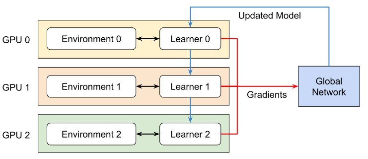
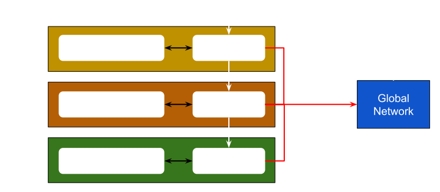

多GPU和多节点训练#
Isaac Lab支持多GPU和多节点的强化学习。目前，此功能仅适用于RL-Games, RSL-RL和skrl库工作流程。我们正在努力将此功能扩展到其他工作流程中。
注意
多GPU和多节点训练仅在Linux上受支持。目前不支持Windows。这是由于Windows上NCCL库的限制。
多GPU训练#
Isaac Lab 支持以下多GPU训练框架:
Pytorch Torchrun 实现#
我们正在使用 PyTorch Torchrun 来管理多GPU训练。Torchrun 通过以下方式管理分布式训练:
进程管理: 为每个GPU启动一个进程，其中每个进程分配给特定的GPU。
脚本执行: 在每个进程上运行相同的训练脚本（例如，RL Games 训练器）。
环境实例: 每个进程都会创建自己的 Isaac Lab 环境实例。
梯度同步: 在每个训练步骤后聚合所有进程的梯度，并将同步的梯度广播回每个进程。
小技巧
请查看这个 PyTorch 的 3 分钟 YouTube 视频 ，了解 Torchrun 的工作原理。
这个设置中的关键组件是:
Torchrun: 处理进程生成、通信和梯度同步。
RL 库: 运行实际训练算法的强化学习库。
Isaac Lab: 提供每个过程独立实例化的仿真环境。
在幕后，Torchrun 使用 DistributedDataParallel 模块来管理分布式训练。使用 Torchrun 在多个 GPU 上训练时，会出现以下情况:
每个 GPU 运行独立的进程。
每个进程执行完整训练脚本
每个进程都保持自己的:
Isaac Lab 环境实例（具有 n 个并行环境）
策略网络复制
用于rollout收集的经验缓冲区
所有进程仅在梯度更新时进行同步
要深入了解 Torchrun 的工作原理，请查看 PyTorch Docs: DistributedDataParallel - Internal Design 。
Jax 实现#
小技巧
JAX 仅支持 skrl 库。
使用 JAX，我们正在使用 skrl.utils.distributed.jax 。由于机器学习框架不会自动从单个程序调用启动多个进程，所以 skrl 库提供了一个模块来启动它们。
{kind=link}

{kind=link}

运行多GPU训练#
要使用多个GPU进行训练，请使用以下命令，其中 --nproc_per_node 表示可用的GPU数量:
python -m torch.distributed.run --nnodes=1 --nproc_per_node=2 scripts/reinforcement_learning/rl_games/train.py --task=Isaac-Cartpole-v0 --headless --distributed
python -m torch.distributed.run --nnodes=1 --nproc_per_node=2 scripts/reinforcement_learning/rsl_rl/train.py --task=Isaac-Cartpole-v0 --headless --distributed
python -m torch.distributed.run --nnodes=1 --nproc_per_node=2 scripts/reinforcement_learning/skrl/train.py --task=Isaac-Cartpole-v0 --headless --distributed
python -m skrl.utils.distributed.jax --nnodes=1 --nproc_per_node=2 scripts/reinforcement_learning/skrl/train.py --task=Isaac-Cartpole-v0 --headless --distributed --ml_framework jax
多节点训练#
要在单台计算机上跨多个GPU扩展训练，还可以在多个节点上训练。要在多个节点/机器上训练，需要在每个节点上启动一个单独的进程。
对于主节点，请使用以下命令，其中 --nproc_per_node 表示可用的GPU数量， --nnodes 表示节点的数量:
python -m torch.distributed.run --nproc_per_node=2 --nnodes=2 --node_rank=0 --rdzv_id=123 --rdzv_backend=c10d --rdzv_endpoint=localhost:5555 scripts/reinforcement_learning/rl_games/train.py --task=Isaac-Cartpole-v0 --headless --distributed
python -m torch.distributed.run --nproc_per_node=2 --nnodes=2 --node_rank=0 --rdzv_id=123 --rdzv_backend=c10d --rdzv_endpoint=localhost:5555 scripts/reinforcement_learning/rsl_rl/train.py --task=Isaac-Cartpole-v0 --headless --distributed
python -m torch.distributed.run --nproc_per_node=2 --nnodes=2 --node_rank=0 --rdzv_id=123 --rdzv_backend=c10d --rdzv_endpoint=localhost:5555 scripts/reinforcement_learning/skrl/train.py --task=Isaac-Cartpole-v0 --headless --distributed
python -m skrl.utils.distributed.jax --nproc_per_node=2 --nnodes=2 --node_rank=0 --coordinator_address=ip_of_master_machine:5555 scripts/reinforcement_learning/skrl/train.py --task=Isaac-Cartpole-v0 --headless --distributed --ml_framework jax
注意，端口（ 5555 ）可以更换为任何其他可用端口。
对于非主节点，请使用以下命令，将 --node_rank 替换为每台机器的索引:
python -m torch.distributed.run --nproc_per_node=2 --nnodes=2 --node_rank=1 --rdzv_id=123 --rdzv_backend=c10d --rdzv_endpoint=ip_of_master_machine:5555 scripts/reinforcement_learning/rl_games/train.py --task=Isaac-Cartpole-v0 --headless --distributed
python -m torch.distributed.run --nproc_per_node=2 --nnodes=2 --node_rank=1 --rdzv_id=123 --rdzv_backend=c10d --rdzv_endpoint=ip_of_master_machine:5555 scripts/reinforcement_learning/rsl_rl/train.py --task=Isaac-Cartpole-v0 --headless --distributed
python -m torch.distributed.run --nproc_per_node=2 --nnodes=2 --node_rank=1 --rdzv_id=123 --rdzv_backend=c10d --rdzv_endpoint=ip_of_master_machine:5555 scripts/reinforcement_learning/skrl/train.py --task=Isaac-Cartpole-v0 --headless --distributed
python -m skrl.utils.distributed.jax --nproc_per_node=2 --nnodes=2 --node_rank=1 --coordinator_address=ip_of_master_machine:5555 scripts/reinforcement_learning/skrl/train.py --task=Isaac-Cartpole-v0 --headless --distributed --ml_framework jax
有关使用PyTorch进行多节点训练的更多详细信息，请访问 PyTorch 文档 。有关使用JAX进行多节点训练的更多详细信息，请访问 skrl 文档 和 JAX 文档 。
备注
如PyTorch文档中所述， 多节点训练受到节点间通信延迟的瓶颈 。当这种延迟较高时，多节点训练可能表现不如在单节点实例上运行。